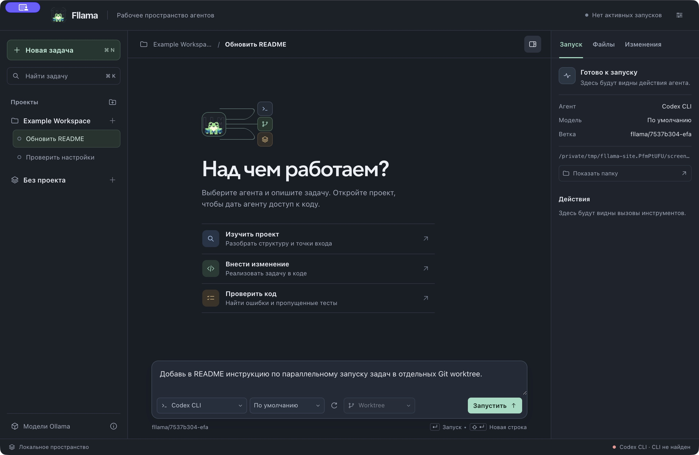
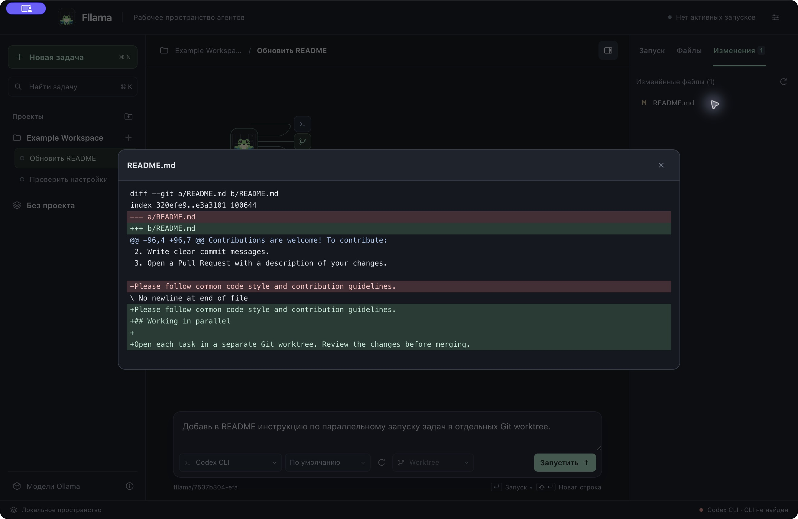

Open a project
Pick a local folder, then select an agent and a model for the task.
Give each task its own agent and Git worktree. Switch between active runs, inspect file changes, and hand work off from one desktop workspace.



A Git worktree gives a task its own checkout from the current commit. Agents on separate worktrees can edit files at the same time.
Pick a local folder, then select an agent and a model for the task.
Inspect changes, open files, and follow the run log while agents work.
Give another agent the conversation and access to the same checkout for a follow-up.
The published installers are v1.0.0, the Ollama chat release. The screenshots above show the Fllama 2.0 development build.
Use Git and Node.js to run the version currently in the repository.
git clone https://github.com/ArduRadioKot/Fllama.git
cd Fllama/src
npm ci
npm startYes. Start Ollama or LM Studio and select an installed model. Cloud providers and hosted CLI backends can send the selected task’s context to their services.
They stay in the original checkout. A new worktree starts from the committed snapshot. Choose Project folder to work with the files already in that checkout.
Inspect the diff in Fllama, then merge the branch with Git when you are satisfied with the change.